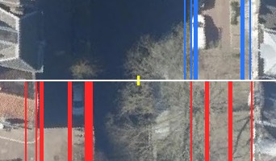
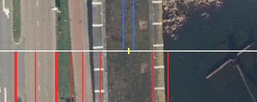
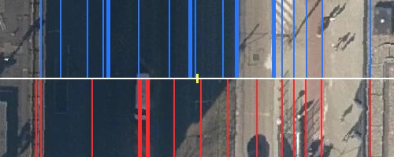

Nizozemsko, mapa povrchů BGT po recenzi: bez BGT (nahoře, modře) a s BGT (dole, červeně)
Řez zleva (A) doprava (B), ±10 m podél ulice, 10 px = 1 m. Silné čáry = okraje vozovky, tenké = ostatní hranice, žlutá = střed řezu, * = odhad. Luchtfoto © Beeldmateriaal Nederland (PDOK, CC BY 4.0).

am2 · Raamgracht (amsterdam)
bez BGT: voda 0.75* · plocha 0.5* · pruh 5.8 · chodnik 1*
s BGT: plocha 1.3 · chodnik 0.65 · pruh 3.45 · zelen 2.15 · parkovani 0.45 · voda 12.5* · plocha 1.9 · pruh 2.95 · chodnik 2.65

ro2 · (bez názvu) (rotterdam)
bez BGT: chodnik 2*
s BGT: pruh 3.94 · pruh 3.94 · zelen 2.9 · cyklostezka 2.35 · chodnik 3.4 · plocha 10.2 · nezname 2.95*

ro4 · Schiedamsedijk (rotterdam)
bez BGT: plocha 2.5* · chodnik 3.45* · cyklostezka 2* · chodnik 0.55* · pruh 3.9 · pruh 3.9 · tramvaj_pruh 2.6 · delici 0.75* · tramvaj 3.5* · delici 1.65* · pruh 4.7 · chodnik 1.18* · stromorad 1.5 · chodnik 1.52* · cyklostezka 2* · plocha 6.1*
s BGT: nezname 0.6* · plocha 6.55* · chodnik_kola 6* · pruh 0.95 · delici 3.45 · tramvaj 3.4 · tramvaj 3.4 · chodnik 3.7 · plocha 3.23* · stromorad 1.5 · plocha 1.5* · cyklostezka 2 · plocha 6.12*